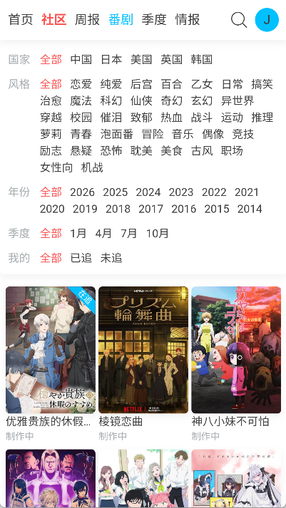

用 AniFun 搭一条每周追番一条龙，少开三四个 App
作为一个每周追十来部番剧还想留点感想的人，过去在 B 站、记事本、微博之间来回切换。试了 AniFun 之后把追番、提醒、记录、分享串成一条链，具体怎么接上下游工具讲清楚。
旧流程：每周一早上的噩梦
我是那种每周追番量在 10 到 15 部之间的人，而且每看完一部，总喜欢写点短评或者截几张图分享一下。说起来挺开心的，但之前的流程真的挺糟心。
每周一早上打开电脑，第一件事是逐个回忆"上周哪些番更新了"。B 站的追番列表是按关注顺序排的，有的更新了你未必注意到；还有几部在小平台播，根本没提醒。好不容易凑齐了，记个 Excel 或者打开苹果自带的备忘录，把每部的进度、看点、吐槽写几行。写完了还要翻截图，挑两张好看的发微博或者小红书。
这一套下来，少说要开 B 站、备忘录、截图文件夹、微博四个窗口，来回切换不说，最烦的是"这部番这周到底更没更新"这种事——漏了就漏了，没人提醒你。试过几次把重要追番设成 B 站特别关注，但特别关注一多，通知也被淹没了。
把 AniFun 插进流程：它不是替代品，是枢纽
半年前朋友推了AniFun官网，我一开始以为就是又一个 ACGN 导航站。用了两周才发现，它真正好用的地方不是聚合了多少网站，而是把"追番 → 记录 → 分享"这条链上最繁琐的环节打通了。整个改动其实很简单，就是把它插到了原来流程的中间位置。
第一步：用它的追番日历替换 Excel 台账
AniFun 首页有个周几追番日历，按周一到周日排列，每个有更新的番剧直接显示封面缩略图、更新时间和当前进度。登录之后加进追番列表的作品，开播前会推提醒。我把原来记在 Excel 里的 12 部番剧全部迁过去之后，最直观的变化是——周一早上不需要再"逐个回忆"了，打开应用，扫一眼日历就知道这周有啥更了、更到第几集。
登录这步值得多说一句。它支持 B 站账号直接授权登录，我用同一个 B 站号授权，原来 B 站追番列表里的东西可以直接同步过来，省了手动加一遍的功夫。注册流程也支持邮箱和手机号，安装包从官方下载拿最靠谱，但如果你已经有 B 站账号，直接授权是最快的路径。
第二步：用番剧 Wiki 资料库做"记录"环节的底稿
每看完一部番想写点什么的时候，以前要先去 B 站、Bangumi 查基本信息（角色名、声优、首播日期），现在 AniFun 的番剧 Wiki 资料库直接给了结构化的条目——制作公司、原著来源、播放平台、关联漫画版的正版渠道全都有。我写短评的时候直接从这里取事实，不用打开三四个标签页交叉核对。比如我要写《魔女之旅》的续作期待，Wiki 里直接标注了第二季的档期状态和相关漫画连载平台，省了至少两次网页搜索。

第三步：社区发帖作为"分享"环节的轻量出口
以前写完短评要么发长微博，要么沉在备忘录里。AniFun 有个轻量化的社区，分 ACGN、问答、生活、漫展、技术、资讯六个板块。我现在写完感想，直接在 ACGN 板块发一帖，配上截好的图。社区氛围还在成长期，不像大社区那样刷屏，互动量在两位数到三位数之间，反而适合认真写东西的人。发完之后，如果想同步到微博，也可以把帖子里的文字复制过去——反正内容已经写好了，换个出口只是一次复制粘贴。

容易断链的两个环节怎么处理
流程跑了三个月，有两个地方出过问题，摸清楚规律之后就稳定了。
第一个坑：跨设备追番数据不同步。 一开始我手机上用 B 站账号授权登录，平板上用邮箱注册，结果两个设备的追番列表完全不重合。后来才搞明白，它的第三方授权和邮箱注册是两套独立账号，数据不互通。现在固定用 B 站账号在所有设备上授权登录，问题就没了。如果以后想换登录方式，可以在个人设置里绑定邮箱，两种登录方式都能进同一个账号。
第二个坑：漫画平台分散，容易漏更。 动画还好，版权集中在少数几家平台；漫画就麻烦了，哔哩哔哩漫画、腾讯动漫、快看漫画各自更各自的节奏。AniFun 的漫画网站分区把这些平台的入口聚合到了一个地方，而且在番剧 Wiki 页面如果标注了漫画版，会自动显示对应的正版平台和更新频率，更细的对应关系去翻AniFun文档。我现在每周固定时间打开漫画分区扫一遍，比挨个 App 点开省事得多。
效果和边界
现在这条链跑下来，每周一早上的追番整理时间从原来的 40 分钟缩短到 15 分钟以内。具体少了什么？少了"逐个回忆哪些番更了"的脑力劳动，少了查基本信息的两次搜索，少了从 Excel 拷到备忘录的手动搬运。
但这套流程也不是万能的。AniFun 的周报功能每周五只更一期，如果你对行业资讯的密度要求很高（比如每天要刷 PV 公开、档期变更），还是得配合 B 站动态或者推特。还有，社区目前不支持长文专栏，如果你想写 3000 字以上的深度评测，还是得找专门的博客平台。
对我这种"每周追十来部番 + 写点短评 + 偶尔分享"的节奏来说，AniFun 已经把最繁琐的中间环节都接住了。剩下的 B 站看正片、微博发长帖，各自做各自擅长的事，整条链没有冗余也没有断点。
AniFun 的整个产品逻辑其实挺简单——不做视频不做漫画，只做导航、聚合和轻社区。但就是这种"把上下游接起来"的定位，反而让它适合嵌进已有的工具链，而不是让用户为了它换掉所有习惯。如果你也是追番量不小、偶尔想留点感想的人，可以试试把自己现有流程里最乱的那个环节换成它。真的可以试试看。
这套资料我在三个仓库都同步了一份，方便不同网络环境下查阅——主仓库在GitHub，国内访问Gitee和GitCode都能拿到完整的文档目录。